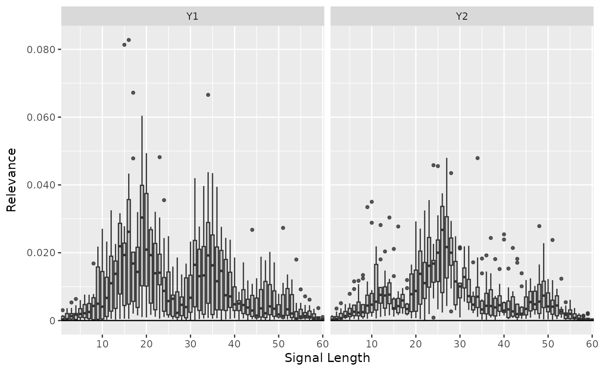

This is an implementation of the Layer-wise Relevance Propagation (LRP) algorithm introduced by Bach et al. (2015). It's a local method for interpreting a single element of the dataset and calculates the relevance scores for each input feature to the model output. The basic idea of this method is to decompose the prediction score of the model with respect to the input features, i.e. $$f(x) = \sum_i R(x_i).$$ Because of the bias vector that absorbs some relevance, this decomposition is generally an approximation. There exist several propagation rules to determine the relevance scores. In this package are implemented: simple rule ("simple"), epsilon rule ("epsilon") and alpha-beta rule ("alpha_beta").
References
S. Bach et al. (2015) On pixel-wise explanations for non-linear classifier decisions by layer-wise relevance propagation. PLoS ONE 10, p. 1-46
Super class
innsight::InterpretingMethod -> LRP
Public fields
rule_nameThe name of the rule with which the relevance scores are calculated. Implemented are
"simple","epsilon","alpha_beta"(default:"simple").rule_paramThe parameter of the selected rule.
Methods
Public methods
Inherited methods
Method new()
Create a new instance of the LRP-Method.
Usage
LRP$new( converter, data, channels_first = TRUE, output_idx = NULL, ignore_last_act = TRUE, rule_name = "simple", rule_param = NULL, dtype = "float" )
Arguments
converterAn instance of the R6 class
Converter.dataThe data for which the relevance scores are to be calculated. It has to be an array or array-like format of size (batch_size, dim_in).
channels_firstThe format of the given date, i.e. channels on last dimension (
FALSE) or after the batch dimension (TRUE). If the data has no channels, use the default valueTRUE.output_idxThis vector determines for which outputs the method will be applied. By default (
NULL), all outputs (but limited to the first 10) are considered.ignore_last_actSet this boolean value to include the last activation, or not (default:
TRUE). In some cases, the last activation leads to a saturation problem.rule_nameThe name of the rule, with which the relevance scores are calculated. Implemented are
"simple","epsilon","alpha_beta"(default:"simple").rule_paramThe parameter of the selected rule. Note: Only the rules
"epsilon"and"alpha_beta"take use of the parameter. Use the default valueNULLfor the default parameters ("epsilon" : \(0.01\), "alpha_beta" : \(0.5\)).dtypeThe data type for the calculations. Use either
'float'for torch::torch_float or'double'for torch::torch_double.
Returns
A new instance of the R6 class 'LRP'.
Method plot()
This method visualizes the result of the selected method in a
ggplot2::ggplot. You can use the argument data_idx to select
the data points in the given data for the plot. In addition, the
individual output nodes for the plot can be selected with the argument
output_idx. The different results for the selected data points and
outputs are visualized using the method ggplot2::facet_grid.
You can also use the as_plotly argument to generate an interactive
plot based on the plot function plotly::plot_ly.
Usage
LRP$plot( data_idx = 1, output_idx = NULL, aggr_channels = "sum", as_plotly = FALSE )
Arguments
data_idxAn integer vector containing the numbers of the data points whose result is to be plotted, e.g.
c(1,3)for the first and third data point in the given data. Default:c(1).output_idxAn integer vector containing the numbers of the output indices whose result is to be plotted, e.g.
c(1,4)for the first and fourth model output. But this vector must be included in the vectoroutput_idxfrom the initialization, otherwise, no results were calculated for this output node and can not be plotted. By default (NULL), the smallest index of all calculated output nodes is used.aggr_channelsPass one of
'norm','sum','mean'or a custom function to aggregate the channels, e.g. the maximum (base::max) or minimum (base::min) over the channels or only individual channels withfunction(x) x[1]. By default ('sum'), the sum of all channels is used.
Note: This argument is used only for 2D and 3D inputs.as_plotlyThis boolean value (default:
FALSE) can be used to create an interactive plot based on the libraryplotly. This function takes use of plotly::ggplotly, hence make sure that the suggested packageplotlyis installed in your R session.
Advanced: You can first output the results as a ggplot (as_plotly = FALSE) and then make custom changes to the plot, e.g. other theme or other fill color. Then you can manually call the functionggplotlyto get an interactive plotly plot.
Returns
Returns either a ggplot2::ggplot (as_plotly = FALSE) or a
plotly::plot_ly (as_plotly = TRUE) with the plotted results.
Method boxplot()
This function visualizes the results of this method in a boxplot, where
the type of visualization depends on the input dimension of the data.
By default a ggplot2::ggplot is returned, but with the argument
as_plotly an interactive plotly::plot_ly plot can be created,
which however requires a successful installation of the package
plotly.
Usage
LRP$boxplot( output_idx = NULL, data_idx = "all", ref_data_idx = NULL, aggr_channels = "norm", preprocess_FUN = abs, as_plotly = FALSE, individual_data_idx = NULL, individual_max = 20 )
Arguments
output_idxAn integer vector containing the numbers of the output indices whose result is to be plotted, e.g.
c(1,4)for the first and fourth model output. But this vector must be included in the vectoroutput_idxfrom the initialization, otherwise, no results were calculated for this output node and can not be plotted. By default (NULL), the smallest index of all calculated output nodes is used.data_idxBy default ("all"), all available data is used to calculate the boxplot information. However, this parameter can be used to select a subset of them by passing the indices. E.g. with
data_idx = c(1:10, 25, 26)only the first10data points and the 25th and 26th are used to calculate the boxplots.ref_data_idxThis integer number determines the index for the reference data point. In addition to the boxplots, it is displayed in red color and is used to compare an individual result with the summary statistics provided by the boxplot. With the default value (
NULL) no individual data point is plotted. This index can be chosen with respect to all available data, even if only a subset is selected with argumentdata_idx.
Note: Because of the complexity of 3D inputs, this argument is used only for 1D and 2D inputs and disregarded for 3D inputs.aggr_channelsPass one of
'norm','sum','mean'or a custom function to aggregate the channels, e.g. the maximum (base::max) or minimum (base::min) over the channels or only individual channels withfunction(x) x[1]. By default ('norm'), the Euclidean norm of all channels is used.
Note: This argument is used only for 2D and 3D inputs.preprocess_FUNThis function is applied to the method's result before calculating the boxplots. Since positive and negative values often cancel each other out, the absolute value (
abs) is used by default. But you can also use the raw data (identity) to see the results' orientation, the squared data (function(x) x^2) to weight the outliers higher or any other function.as_plotlyThis boolean value (default:
FALSE) can be used to create an interactive plot based on the libraryplotlyinstead ofggplot2. Make sure that the suggested packageplotlyis installed in your R session.individual_data_idxOnly relevant for a
plotlyplot with input dimension1or2! This integer vector of data indices determines the available data points in a dropdown menu, which are drawn in individually analogous toref_data_idxonly for more data points. With the default valueNULLthe firstindividual_maxdata points are used.
Note: Ifref_data_idxis specified, this data point will be added to those fromindividual_data_idxin the dropdown menu.individual_maxOnly relevant for a
plotlyplot with input dimension1or2! This integer determines the maximum number of individual data points in the dropdown menu without countingref_data_idx. This means that ifindividual_data_idxhas more thanindividual_maxindices, only the firstindividual_maxwill be used. A too high number can significantly increase the runtime.
Returns
Returns either a ggplot2::ggplot (as_plotly = FALSE) or a
plotly::plot_ly (as_plotly = TRUE) with the boxplots.
Method clone()
The objects of this class are cloneable with this method.
Usage
LRP$clone(deep = FALSE)
Arguments
deepWhether to make a deep clone.
Examples
#----------------------- Example 1: Torch ---------------------------------- library(torch) # Create nn_sequential model and data model <- nn_sequential( nn_linear(5, 12), nn_relu(), nn_linear(12, 2), nn_softmax(dim = 2) ) data <- torch_randn(25, 5) # Create Converter converter <- Converter$new(model, input_dim = c(5)) # Apply method LRP with simple rule (default) lrp <- LRP$new(converter, data) #> Backwardpass 'LRP': #> | | | 0% | |=================================== | 50% | |======================================================================| 100% # Print the result as an array lrp$get_result() #> , , Y1 #> #> X1 X2 X3 X4 X5 #> 1 -0.021708824 -0.2201961130 -0.041045614 -0.0328800343 -0.06011916 #> 2 0.040894803 -0.0487681031 0.168084845 -0.0500427261 -0.04057082 #> 3 0.005458025 -0.0150443418 0.041317116 0.0102503616 -0.01863346 #> 4 -0.015756400 -0.0437435545 0.030111548 0.0257085878 0.01391735 #> 5 -0.173254788 0.0107867289 0.022121124 -0.0819343105 0.08390036 #> 6 0.083826154 -0.0911418423 0.028945601 0.0473273098 0.04804676 #> 7 0.068967290 -0.0807720870 -0.010717368 -0.0035537730 -0.01815405 #> 8 0.044455688 -0.0160942934 0.052040707 0.0034270573 -0.02294051 #> 9 0.138601601 -0.4255517423 0.061187107 0.0656070411 -0.30504209 #> 10 0.096367955 -0.0296109468 0.175165161 -0.0387799591 -0.12364886 #> 11 0.039871071 0.0205862448 -0.158476114 0.0088310027 -0.17028682 #> 12 -0.083530582 -0.2147201598 0.191417918 -0.0005524866 0.03548411 #> 13 -0.001823353 0.0079763560 -0.052311677 0.0159000102 0.11688153 #> 14 -0.151750803 -0.1239226758 0.013569277 0.0024291088 -0.03845766 #> 15 -0.020628840 -0.0887182057 0.041345049 0.0059924060 0.03662468 #> 16 -0.055027157 0.0086488575 -0.213463858 0.0870027021 -0.11391030 #> 17 -0.144235536 -0.1961785406 -0.049897067 0.0022935332 -0.04708656 #> 18 -0.173390597 -0.0438658260 -0.004439936 -0.0139668873 0.03299816 #> 19 0.144052982 -0.0185091849 0.067052007 0.0558729358 -0.35867772 #> 20 -0.307977796 -0.1038050056 -0.019493654 -0.1193799302 -0.03738883 #> 21 0.008428895 -0.0077430671 -0.099129573 0.0138944089 0.08306396 #> 22 0.005588565 -0.1007003710 -0.039948005 0.0269166790 0.01096062 #> 23 -0.024767734 -0.0002164367 -0.062139645 -0.0257258285 -0.02570885 #> 24 0.123194024 -0.0025297503 0.092005715 -0.0054711644 0.02475787 #> 25 -0.067197032 -0.0482064448 -0.273554742 -0.1299347579 -0.11398748 #> #> , , Y2 #> #> X1 X2 X3 X4 X5 #> 1 -0.043921106 -0.0613983124 -0.032278169 0.0269645713 -0.053078309 #> 2 0.044883866 0.0012274258 0.160252094 0.0013691065 -0.039090060 #> 3 0.009539492 -0.0263574775 0.065732747 0.0024085185 -0.034468662 #> 4 -0.018190345 -0.0061562303 0.109038062 0.0117891384 0.036839742 #> 5 -0.171240747 0.0316422842 0.038402956 -0.0931810737 0.140936583 #> 6 0.181604818 -0.1068945229 0.050967813 0.1313504130 0.242205039 #> 7 0.254301071 -0.0138571048 -0.008105059 -0.0029872954 -0.022518145 #> 8 0.049425580 -0.0006421121 0.299507260 -0.0014905871 -0.031714112 #> 9 0.109194897 -0.1627614945 0.031931419 0.0645732954 -0.147963285 #> 10 0.140113175 -0.0612215288 0.394886017 -0.0179104581 -0.157218173 #> 11 0.198955759 0.0147406748 -0.029141391 0.0073423041 -0.029045369 #> 12 -0.107742921 -0.0726322681 0.258218676 -0.0011274080 0.074157380 #> 13 -0.009805241 0.0178644154 -0.048944842 0.1521479338 0.148721024 #> 14 -0.133716166 -0.1040693000 0.147048727 -0.0069562434 -0.044568442 #> 15 -0.059855323 -0.1097862199 0.102540977 -0.0042287749 0.239819854 #> 16 0.309979588 -0.0033217620 -0.071477957 0.1824445277 -0.048203338 #> 17 -0.136677980 0.0641174838 -0.009252898 -0.0024746570 0.001826568 #> 18 -0.064070947 -0.0262611937 -0.008479793 -0.0049133105 0.014839131 #> 19 0.586888552 0.0285838638 0.041639391 0.0264466591 -0.136414796 #> 20 -0.116033278 -0.0669058412 -0.026928959 -0.0461080521 -0.016496714 #> 21 0.025981186 0.0187383909 -0.126180321 0.0002754969 0.142994732 #> 22 0.066322923 -0.0814428851 -0.010616626 0.1360984743 0.004500631 #> 23 -0.029792372 0.0125881359 -0.062560402 0.0561573654 -0.024102025 #> 24 0.266893178 -0.0029669846 0.162004933 -0.0151844602 0.124805123 #> 25 -0.093013018 -0.0182041321 -0.004033375 -0.0777497813 0.003901101 #> # Plot the result for both classes plot(lrp, output_idx = 1:2)# Plot the boxplot of all datapoints without preprocess function boxplot(lrp, output_idx = 1:2, preprocess_FUN = identity)
# ------------------------- Example 2: Neuralnet --------------------------- library(neuralnet) data(iris) nn <- neuralnet(Species ~ ., iris, linear.output = FALSE, hidden = c(10, 8), act.fct = "tanh", rep = 1, threshold = 0.5 ) # create an converter for this model converter <- Converter$new(nn) # create new instance of 'LRP' lrp <- LRP$new(converter, iris[, -5], rule_name = "simple") #> Backwardpass 'LRP': #> | | | 0% | |======================= | 33% | |=============================================== | 67% | |======================================================================| 100% # get the result as an array lrp$get_result() #> , , setosa #> #> Sepal.Length Sepal.Width Petal.Length Petal.Width #> 1 3.92833185 1.05308211 -0.6294739 0.64888316 #> 2 3.00199389 1.73109591 -0.8032066 0.61736894 #> 3 4.48276758 0.60232174 -0.4161836 0.73290658 #> 4 4.04569960 0.97200674 -0.8174788 0.67609566 #> 5 5.02391863 0.18367070 -0.4708450 0.71950024 #> 6 2.93453002 1.41554177 -1.1000906 1.36751783 #> 7 5.66162682 -0.65341491 -0.2928249 1.37552798 #> 8 3.72707653 1.23278773 -0.8512112 0.62503773 #> 9 4.16930866 0.86000466 -0.6671156 0.71548706 #> 10 3.35866523 1.68340743 -1.0016736 0.26905826 #> 11 3.43118095 1.47861993 -0.8562521 0.58561653 #> 12 4.44878483 0.66304082 -0.8249745 0.68133181 #> 13 3.47432303 1.56727624 -0.7875739 0.28519323 #> 14 6.65649080 -0.77397305 0.1089992 0.43696871 #> 15 3.36029410 1.40803516 -0.1331764 0.64987940 #> 16 4.72995615 -0.17315628 -0.5075927 1.58012617 #> 17 3.76951241 0.58082974 -0.3608961 1.61844289 #> 18 3.53194237 1.11729705 -0.6484438 1.06116724 #> 19 2.47927833 2.10540605 -1.3354219 0.83846539 #> 20 4.98714352 -0.07204924 -0.5318794 1.17774713 #> 21 2.58670616 2.18640113 -1.4445326 0.51084781 #> 22 3.68875813 0.69939011 -0.7211204 1.57144809 #> 23 10.00391293 -3.80275869 0.6123581 1.20398653 #> 24 1.69686699 2.21762967 -1.6524866 1.55623436 #> 25 3.74933076 1.22665608 -1.1940234 0.63171625 #> 26 2.70400715 2.02467799 -1.3060658 0.54782486 #> 27 2.65378380 1.60753357 -1.1388482 1.38487017 #> 28 3.40474510 1.49068332 -0.8894632 0.59521270 #> 29 3.23528934 1.58069289 -0.7060253 0.61301225 #> 30 3.87106419 1.12327409 -0.9736201 0.64601058 #> 31 3.18599463 1.66122854 -1.1673495 0.58637047 #> 32 2.25078940 1.90103459 -1.0066637 1.36610413 #> 33 8.45994759 -2.40429759 -0.1189886 0.40788516 #> 34 6.11008930 -0.72699577 -0.3106530 0.72844321 #> 35 3.10756469 1.69726658 -1.0044237 0.59403938 #> 36 3.38055372 1.39209461 -0.2789248 0.69263428 #> 37 2.77072763 1.87039244 -0.4158587 0.62679267 #> 38 6.29782724 -0.58902198 -0.3348688 0.36318225 #> 39 4.93324375 0.26331827 -0.3708873 0.79237241 #> 40 3.39080000 1.49683833 -0.9069092 0.59987468 #> 41 4.12404585 0.60982496 -0.3947322 1.16136754 #> 42 2.44020247 1.79187667 -0.7693089 1.07882106 #> 43 6.49643230 -0.97344238 -0.1026208 0.91726178 #> 44 1.53731680 2.05601740 -1.4918343 1.97421539 #> 45 3.22261786 1.10504782 -1.0927263 1.48277938 #> 46 2.89152050 1.59603596 -0.8275893 1.03155100 #> 47 5.31871986 -0.05121689 -0.6469544 0.70991528 #> 48 4.81980515 0.35421753 -0.5214336 0.74663895 #> 49 3.79574060 1.18861604 -0.8067435 0.60912269 #> 50 3.52081060 1.36247897 -0.7049785 0.63454223 #> 51 0.67078531 3.36996698 -4.1577053 -0.62828100 #> 52 0.65284675 4.38734484 -4.9684558 -1.32554448 #> 53 1.30572760 3.86275554 -4.9590950 -1.21684861 #> 54 1.87653899 3.85907078 -5.5602140 -1.73087621 #> 55 1.86932313 3.97973752 -5.4291868 -1.65020835 #> 56 1.01647389 4.77953005 -5.7774096 -1.63576496 #> 57 1.03505826 5.38575125 -5.9306722 -2.08128810 #> 58 0.10479400 3.74998975 -4.4202247 -0.82332087 #> 59 0.90182257 3.32354569 -4.3666897 -0.71296155 #> 60 1.03983057 5.23106718 -5.9771662 -2.27771807 #> 61 1.19284093 2.97310376 -4.6269093 -0.82909834 #> 62 0.90983826 4.78733063 -5.4564309 -1.81610620 #> 63 1.38137352 2.35250473 -4.0649724 -0.31137282 #> 64 1.36212981 4.68555355 -5.8014565 -1.72823918 #> 65 0.12049313 4.11844826 -4.4895759 -1.08048904 #> 66 0.65518349 3.42587757 -4.2196994 -0.71199381 #> 67 1.38918579 6.19765091 -6.8696575 -2.77123642 #> 68 0.14610063 3.39414597 -4.0758243 -0.38838750 #> 69 4.62568474 5.03472567 -8.1645403 -3.80492067 #> 70 0.63535047 3.33842778 -4.3877854 -0.70047218 #> 71 3.15703201 8.81885815 -9.3909645 -5.43831921 #> 72 0.69901955 3.41500378 -4.3351822 -0.80184996 #> 73 4.32952261 5.85695171 -8.7220135 -3.83066440 #> 74 0.83800066 3.91137481 -4.9595385 -0.95769960 #> 75 0.69601625 3.35309529 -4.2591891 -0.69229805 #> 76 0.82996881 3.44349360 -4.3655229 -0.81736624 #> 77 1.67217875 3.41015053 -4.9098778 -1.10351849 #> 78 3.54743505 6.27182150 -8.0433073 -3.78903389 #> 79 1.56487405 4.97018147 -6.0279536 -2.14174867 #> 80 0.38088053 3.00771070 -3.8932557 -0.29747051 #> 81 0.79273456 3.25082707 -4.4399285 -0.75138938 #> 82 0.57866329 3.05378914 -4.1377349 -0.46928373 #> 83 0.51032174 3.49716687 -4.3462877 -0.76618111 #> 84 2.43414640 4.91087246 -6.3454518 -2.49690461 #> 85 1.43079031 6.90155315 -7.4177976 -3.20323634 #> 86 0.56531942 5.98513174 -6.0726023 -2.27188897 #> 87 1.09629762 3.94502640 -4.8962221 -1.22126532 #> 88 2.32740641 3.09713054 -5.2089367 -1.28306341 #> 89 0.05034725 4.80654001 -5.0645509 -1.33944774 #> 90 1.29150653 4.05748081 -5.3380241 -1.55743444 #> 91 1.07821858 4.48123169 -5.6935797 -1.47245240 #> 92 0.92202401 4.60253525 -5.4360790 -1.51331902 #> 93 0.77044880 3.42121291 -4.4825177 -0.83087844 #> 94 0.43947950 3.36426592 -4.3401356 -0.72894800 #> 95 0.94361126 4.40644550 -5.3968372 -1.51304853 #> 96 -0.15275192 4.49387550 -4.7308402 -0.97828507 #> 97 0.41265547 4.51176357 -5.0941854 -1.30987430 #> 98 0.60668999 3.66499782 -4.4788713 -0.85398751 #> 99 0.33117887 3.49187160 -4.2221951 -0.83285767 #> 100 0.59533155 4.22479725 -4.9787807 -1.26258802 #> 101 0.37978455 3.30797482 -3.1692715 -0.61106861 #> 102 0.91584831 3.25564480 -3.5837631 -1.00119781 #> 103 1.13219178 2.62310100 -3.1157973 -0.62886053 #> 104 1.14942360 3.42012405 -3.9468770 -1.04038143 #> 105 0.68969965 2.82971311 -3.0190125 -0.54150146 #> 106 1.00118899 2.10191154 -2.6217213 -0.19863187 #> 107 0.71785676 4.15264082 -4.2831202 -1.59432721 #> 108 1.40312517 2.50119877 -3.3317983 -0.54312271 #> 109 1.21133757 2.08520865 -2.8766801 -0.31904367 #> 110 0.62093085 3.36615753 -3.2152088 -0.83368039 #> 111 2.47936821 5.70644188 -6.3352103 -3.33591008 #> 112 1.35548437 2.90380502 -3.5814648 -0.96457082 #> 113 1.27786183 3.06572866 -3.5307636 -1.03631949 #> 114 0.83786768 2.69091702 -3.0748072 -0.66464883 #> 115 0.63121295 2.98028207 -3.0366030 -0.75166768 #> 116 0.80746239 3.60183787 -3.5149159 -1.21896994 #> 117 1.82634938 4.20991421 -5.0565667 -1.82123709 #> 118 0.95315915 3.62579060 -3.7291384 -0.97278881 #> 119 0.93416822 1.41977537 -2.0177572 0.16238104 #> 120 2.09553361 2.85630894 -4.4281240 -1.18797278 #> 121 0.89863098 3.05059671 -3.2093647 -0.83632851 #> 122 0.75458008 3.67899895 -3.7109559 -1.27011657 #> 123 1.12468112 1.81193376 -2.4884567 -0.08158863 #> 124 2.58108854 4.38219452 -5.6665416 -2.54392886 #> 125 1.05220985 3.80642509 -3.9556239 -1.30275643 #> 126 2.38439035 4.37603998 -5.6336775 -1.98841202 #> 127 3.08959055 5.62728834 -6.9724493 -3.60136724 #> 128 3.06459069 6.81002808 -7.8830304 -4.20485020 #> 129 0.83461231 2.63040829 -2.9801652 -0.52548194 #> 130 4.57447910 6.33728981 -9.2488241 -3.74728251 #> 131 1.51280165 2.27897620 -3.1714730 -0.53180122 #> 132 3.47652555 6.50872898 -7.9192209 -3.56176543 #> 133 0.79006046 2.56202054 -2.8824019 -0.47331795 #> 134 3.77010608 6.65425920 -8.9910660 -3.79522896 #> 135 1.94196630 3.83310747 -5.3465457 -1.34765530 #> 136 1.22075689 2.13867998 -2.7301507 -0.39862365 #> 137 0.41487634 3.85273385 -3.4767764 -1.07677257 #> 138 1.82738400 4.75900555 -5.5071402 -2.11712360 #> 139 3.16394329 7.25485325 -8.2529030 -4.58690596 #> 140 1.66945660 3.58223891 -4.1541815 -1.57062793 #> 141 0.76882637 2.88814616 -3.0074599 -0.69468421 #> 142 1.60591769 3.40658569 -3.8190029 -1.58154225 #> 143 0.91584831 3.25564480 -3.5837631 -1.00119781 #> 144 0.70670426 2.97890830 -3.0807886 -0.64410043 #> 145 0.61526197 3.19947052 -3.1118836 -0.79046988 #> 146 1.16985774 3.01210928 -3.3082371 -1.06640232 #> 147 1.55571556 2.67102766 -3.5227365 -0.99558491 #> 148 1.67205977 3.91652727 -4.4757433 -1.79804778 #> 149 0.51244473 4.23482800 -3.7890480 -1.41737044 #> 150 1.63970315 5.18574905 -5.6648278 -2.44330239 #> #> , , versicolor #> #> Sepal.Length Sepal.Width Petal.Length Petal.Width #> 1 5.66517353 -6.472754478 2.7697542 1.075689197 #> 2 3.04317713 -4.309211254 2.8600328 1.060004592 #> 3 5.87731171 -6.442018986 2.6490691 1.162316918 #> 4 5.86621475 -6.639185429 3.2661076 1.224517226 #> 5 7.39751053 -7.907007694 2.8275964 1.162167430 #> 6 6.21053505 -8.352962494 3.6110020 2.630238771 #> 7 7.85886574 -8.806791306 3.1224546 2.186144590 #> 8 5.63859701 -6.536877155 3.0947149 1.115578294 #> 9 5.44571114 -6.132178783 3.0761926 1.246609926 #> 10 4.28381348 -5.026397228 3.0869873 0.500944078 #> 11 5.28174257 -6.328685760 2.9452801 1.021711707 #> 12 7.18838978 -7.912168026 3.4428136 1.237577677 #> 13 4.05646324 -4.719526768 2.8303804 0.498722374 #> 14 7.58309650 -7.022771835 2.2730572 0.613274097 #> 15 4.38625288 -5.320036888 1.9288542 0.873233318 #> 16 8.50710297 -10.174444199 2.9829965 2.548700333 #> 17 5.77976799 -7.483139515 2.5179214 2.442231655 #> 18 5.15233612 -6.503698826 2.8423126 1.762662530 #> 19 3.79916954 -5.804816723 3.5084586 1.631332040 #> 20 8.03332043 -9.118123055 3.1380472 1.951806784 #> 21 3.18639231 -4.833083630 3.5655866 1.032273650 #> 22 6.36085510 -8.245857239 3.2001028 2.733410358 #> 23 11.33089542 -10.580567360 2.1920099 1.523094893 #> 24 2.57709455 -5.879138947 3.9098909 3.626988649 #> 25 7.36830378 -8.384329796 4.1410236 1.283929825 #> 26 2.68313026 -4.260479927 3.4469178 1.083344460 #> 27 4.56642246 -6.794696331 3.5330427 2.717322588 #> 28 5.04234838 -6.088746071 3.0224056 1.057121992 #> 29 4.09364033 -5.208116531 2.7329373 1.017745852 #> 30 6.12020302 -6.981120586 3.4884059 1.222675204 #> 31 4.63199186 -5.767227650 3.4713457 1.154535770 #> 32 2.03333664 -4.618500233 3.1453543 2.413178444 #> 33 11.84047127 -11.437840462 3.1080809 0.621856809 #> 34 9.34035110 -9.687198639 2.6622446 1.114746928 #> 35 3.87943816 -5.080086708 3.1578577 1.097169876 #> 36 3.66118383 -4.588194370 2.2000029 1.003074050 #> 37 2.74952650 -4.067686081 2.3080513 0.918801427 #> 38 8.80281162 -8.627112389 2.8486307 0.574898958 #> 39 6.24957132 -6.681856155 2.8028266 1.268045068 #> 40 4.91831446 -5.965216637 3.0624251 1.075442076 #> 41 5.78786898 -6.904388428 2.5929682 1.799552441 #> 42 0.42342317 -2.539219856 2.7958083 1.806164622 #> 43 8.15579319 -8.302111626 2.9001083 1.393357873 #> 44 3.65953207 -7.360751152 3.6569278 4.715496540 #> 45 7.47411346 -9.739253044 4.1483207 2.954525709 #> 46 3.17372537 -4.830151558 2.9749789 1.801605344 #> 47 8.74093819 -9.315883636 3.3262386 1.220914721 #> 48 6.67769909 -7.208752632 2.9984100 1.244267583 #> 49 6.05547619 -6.950011730 2.9757752 1.060111642 #> 50 4.67586756 -5.637506962 2.8100684 1.071478248 #> 51 0.25914282 0.730089366 0.8405771 0.270161062 #> 52 1.69512522 1.075736642 -0.1407699 -0.864331663 #> 53 2.34270406 2.645072699 -2.0529807 -2.107182026 #> 54 2.52553797 2.555292130 -2.2363434 -2.644755840 #> 55 3.30852938 3.525036812 -3.3892217 -3.431636095 #> 56 2.45836449 1.780259371 -1.4858204 -1.735189080 #> 57 3.49672842 2.590977907 -2.4021204 -2.906108379 #> 58 -0.08372016 -1.900426507 3.3986297 2.558393240 #> 59 0.51458210 0.971096694 0.4213021 -0.019015692 #> 60 2.78263330 1.184141278 -0.8054777 -1.876435399 #> 61 -0.29700458 -0.102742434 1.9602668 1.052597046 #> 62 2.32496500 1.275789142 -0.5758957 -1.511174917 #> 63 -1.14038289 0.192525715 2.1248002 1.388336420 #> 64 3.16754842 2.931384802 -2.9385464 -2.807118654 #> 65 0.45833939 -1.226475954 2.4583437 1.563269973 #> 66 0.19836958 0.469305396 1.1575013 0.423736006 #> 67 4.42868853 3.468989372 -3.8971109 -4.198984623 #> 68 -0.65125251 -1.144390583 3.0187888 2.199693680 #> 69 6.38711929 6.444876194 -8.8775883 -7.767388344 #> 70 -0.17113626 -0.362235069 2.0733614 1.272292256 #> 71 6.82442665 8.476809502 -9.5106897 -9.389116287 #> 72 0.08245615 0.066230156 1.5925535 0.752510309 #> 73 6.53165627 7.097540379 -9.7438526 -7.675897121 #> 74 1.21619332 1.153470755 -0.2907194 -0.459732354 #> 75 0.11372729 0.340075731 1.2812846 0.583789110 #> 76 0.50886655 0.810403883 0.6934199 -0.004410982 #> 77 2.17425323 2.729534149 -2.2009459 -2.065517187 #> 78 7.32888508 7.863209724 -9.6536140 -8.424967766 #> 79 3.74841070 3.369251966 -3.4247904 -3.661141634 #> 80 -1.27604723 -1.459902763 3.6337457 2.941357613 #> 81 -0.15631738 -0.225933850 1.9602669 1.136517406 #> 82 -0.83101737 -0.882119656 2.9483206 2.108183384 #> 83 -0.03123557 -0.414301038 2.0451610 1.222295403 #> 84 2.54954338 4.075058460 -4.4177761 -4.756356716 #> 85 4.88259268 3.971989632 -4.6538329 -4.882480145 #> 86 3.23472834 1.135109782 -0.9297832 -1.876613975 #> 87 1.95656085 2.063612461 -1.2254736 -1.614363194 #> 88 2.48905396 3.028918266 -2.8677156 -2.658269167 #> 89 1.32939684 -0.759940028 1.5710180 0.637133241 #> 90 1.85212910 1.460981965 -0.6977551 -1.395432115 #> 91 2.02090645 1.537856102 -1.1138241 -1.341654181 #> 92 2.34507823 1.771407008 -1.2852718 -1.632145762 #> 93 0.20251296 0.117497347 1.4373777 0.667236328 #> 94 -0.46647841 -1.413314104 3.2275188 2.370975018 #> 95 1.85688698 1.106817126 -0.4028938 -1.040312052 #> 96 0.76025534 -1.117030382 2.1467431 1.287060022 #> 97 1.33809555 0.035514172 0.8770214 0.058083843 #> 98 0.51314127 0.333368570 1.0574641 0.365058720 #> 99 -0.42347026 -1.803310871 3.3989773 2.774266005 #> 100 1.17338240 0.226766542 0.8227584 -0.003690505 #> 101 -7.45232153 -2.816878080 9.1228428 1.672960281 #> 102 -2.59999466 -0.002705497 2.9214480 -0.888877094 #> 103 -2.35414052 0.365904152 2.2714217 -0.944456816 #> 104 -1.66956007 0.808381081 1.4872850 -1.581422687 #> 105 -4.81104088 -1.088173270 5.4763489 0.369038612 #> 106 -4.70420647 -0.629394889 4.9538317 0.176844195 #> 107 -1.67152965 0.233724579 2.1905386 -1.530850768 #> 108 -2.14575577 0.699381292 1.7812915 -1.175214529 #> 109 -4.02093029 -0.269254863 4.1172476 -0.199178696 #> 110 -2.73456335 -0.129194736 3.0203462 -0.589357734 #> 111 3.88583493 5.240345955 -5.4134278 -6.448560715 #> 112 -1.39323235 0.900366664 1.1466237 -1.633536577 #> 113 -1.03475726 1.078493118 0.7907227 -1.832227588 #> 114 -4.34061766 -0.887225628 4.9582620 0.185136437 #> 115 -5.28343773 -1.637169003 6.2188125 0.943703115 #> 116 -1.71037996 0.378963202 1.9476430 -1.277686000 #> 117 1.22556150 2.905818939 -2.3596199 -3.643124342 #> 118 -1.11058807 1.173455834 0.7948393 -1.811337709 #> 119 -10.25140476 -2.212116480 11.0529633 1.995243311 #> 120 -0.09930557 1.827353716 -0.8638349 -2.500222683 #> 121 -2.28629661 0.230340630 2.3837557 -0.915007770 #> 122 -2.20349622 -0.019063519 2.6982703 -1.033819437 #> 123 -5.35807610 -0.756540358 5.6220279 0.379090190 #> 124 2.88970709 4.069073677 -4.2790556 -5.220492840 #> 125 -0.79641211 1.219449639 0.5990754 -2.068150520 #> 126 2.77761865 4.176939964 -4.6435499 -4.612804413 #> 127 4.53887224 5.720728397 -6.4775801 -6.977773666 #> 128 5.17668867 6.657452583 -7.5407748 -7.687315464 #> 129 -4.36807728 -0.774214625 4.8409190 0.139994353 #> 130 7.57461834 8.202937126 -11.6299191 -8.006740570 #> 131 -1.86973262 0.756825387 1.4981624 -1.235663533 #> 132 6.69221067 7.999980450 -9.9673529 -8.057700157 #> 133 -4.99390268 -1.085534334 5.5687284 0.500824869 #> 134 6.75224924 7.665317535 -10.1466112 -7.615245819 #> 135 -0.03519112 2.308222532 -1.3830204 -2.647579670 #> 136 -2.73906994 0.179824367 2.6316974 -0.594275892 #> 137 -3.31819081 -0.827308059 4.1438994 -0.190496355 #> 138 1.64190125 3.315807581 -2.9282827 -4.046504974 #> 139 5.57855034 7.112410545 -8.0194206 -8.209265709 #> 140 0.75287545 2.337633610 -1.3625090 -3.276485920 #> 141 -3.48256087 -0.481918424 3.8190143 -0.125360444 #> 142 0.48000902 2.057547569 -0.8050851 -3.128154278 #> 143 -2.59999466 -0.002705497 2.9214480 -0.888877094 #> 144 -3.76505661 -0.596649170 4.1930780 -0.088484220 #> 145 -3.61023664 -0.687610686 4.1073618 -0.010636449 #> 146 -1.30840337 0.797938764 1.2515086 -1.577332854 #> 147 -1.09840798 1.040090322 0.7979249 -1.811107755 #> 148 0.91282707 2.475231171 -1.5715737 -3.475382090 #> 149 -1.82037187 0.071931891 2.3715010 -1.179279685 #> 150 1.55087841 3.143816948 -2.5580757 -4.130039692 #> #> , , virginica #> #> Sepal.Length Sepal.Width Petal.Length Petal.Width #> 1 2.1113760 -3.146020 1.266815 0.8472772 #> 2 2.3856621 -3.241929 1.276490 0.9121323 #> 3 1.9774935 -2.936332 1.376550 0.9293128 #> 4 1.2357316 -2.553571 1.437166 0.8981507 #> 5 1.8041248 -2.937775 1.381158 0.8609605 #> 6 0.6190249 -3.045571 1.289747 1.8723496 #> 7 1.0836812 -2.791533 1.608103 1.5716125 #> 8 1.6845162 -2.894781 1.290116 0.8382202 #> 9 1.3741812 -2.551112 1.461761 0.9521844 #> 10 2.1481256 -2.878283 1.264249 0.3900306 #> 11 2.1930339 -3.290065 1.178592 0.7898616 #> 12 1.0322549 -2.503471 1.477103 0.8536152 #> 13 2.3926747 -2.953344 1.288370 0.4083986 #> 14 2.5380266 -2.792634 1.532067 0.4819218 #> 15 3.9392583 -4.466449 1.186911 0.8392779 #> 16 1.2884463 -3.430467 1.309049 1.8555357 #> 17 1.9534301 -3.810359 1.245698 2.0598657 #> 18 1.8060704 -3.286546 1.262930 1.4181399 #> 19 1.9201132 -3.541591 1.108334 1.2344152 #> 20 1.1788146 -2.927642 1.438933 1.3885217 #> 21 2.0897934 -3.284759 1.166361 0.7873158 #> 22 0.8326774 -3.103093 1.352304 2.0462091 #> 23 3.0079486 -3.548983 1.634872 1.0992392 #> 24 0.3221173 -3.376477 1.243101 2.7812755 #> 25 0.2872828 -2.203609 1.657771 0.8280533 #> 26 1.9999951 -3.110327 1.266395 0.8654659 #> 27 0.6741470 -3.049239 1.308177 2.0492418 #> 28 2.0122924 -3.136431 1.218128 0.8165261 #> 29 2.5281184 -3.421627 1.216662 0.8529922 #> 30 1.0234995 -2.487449 1.443711 0.8653534 #> 31 1.3419720 -2.697215 1.333530 0.8561565 #> 32 2.0721052 -3.937783 1.195417 2.0915308 #> 33 2.0329967 -2.933908 1.641723 0.3908593 #> 34 2.1471543 -3.265370 1.365037 0.8017134 #> 35 1.8947546 -2.999736 1.272959 0.8708162 #> 36 3.0649085 -3.626173 1.271240 0.9433241 #> 37 3.5511260 -4.097486 1.221179 0.8780079 #> 38 1.9801588 -2.759811 1.488618 0.4010371 #> 39 1.6339737 -2.662731 1.489449 0.9796009 #> 40 1.9217839 -3.060423 1.239526 0.8304942 #> 41 1.9292142 -3.317784 1.314060 1.4774042 #> 42 2.2814119 -3.281266 1.441283 1.8150821 #> 43 1.6406695 -2.696428 1.637705 1.0033591 #> 44 -0.6134835 -3.219662 1.212539 3.5945001 #> 45 -0.3236482 -2.558233 1.652369 1.9675751 #> 46 1.8002677 -3.221817 1.291215 1.5294448 #> 47 1.2174081 -2.657881 1.473826 0.8175532 #> 48 1.4776833 -2.657435 1.467783 0.9220306 #> 49 1.9415725 -3.110154 1.225421 0.7964967 #> 50 2.1690478 -3.155381 1.261444 0.8690776 #> 51 -3.7294183 -3.412353 2.552127 2.4700677 #> 52 -4.5483680 -3.651828 3.457337 2.7929819 #> 53 -4.9060059 -3.896808 3.978345 2.9472184 #> 54 -5.7138214 -3.878170 4.837081 3.5428195 #> 55 -5.3463407 -4.151024 4.515945 3.4322491 #> 56 -6.3111234 -4.098470 5.674843 3.2738934 #> 57 -5.6601562 -4.295195 4.896254 3.3566062 #> 58 -4.1126356 -2.863116 2.602187 2.8439674 #> 59 -4.2948308 -3.412959 3.157604 2.5969734 #> 60 -5.8883471 -3.847806 4.776711 3.4743586 #> 61 -4.5401564 -2.915497 3.237913 2.8305037 #> 62 -4.9878254 -3.734727 3.858932 3.0836120 #> 63 -3.7440486 -2.919621 2.447363 2.5589800 #> 64 -6.2219949 -4.353363 5.687624 3.4402163 #> 65 -3.6999764 -3.077468 2.170208 2.6781750 #> 66 -3.5343115 -3.331496 2.293109 2.4869070 #> 67 -7.2026706 -5.105853 6.974948 4.2690048 #> 68 -4.1742859 -3.152357 3.035720 2.6152670 #> 69 -9.4040813 -7.083018 10.684780 7.6825562 #> 70 -4.2564588 -3.106515 2.992534 2.6680398 #> 71 -10.1181068 -9.992364 12.861766 9.1356983 #> 72 -3.6288021 -3.190281 2.302519 2.5725996 #> 73 -10.3762798 -8.012126 12.596947 7.7607088 #> 74 -5.6710057 -3.730013 4.887805 2.8440747 #> 75 -3.8055551 -3.275301 2.560588 2.5372617 #> 76 -3.7881422 -3.366937 2.561966 2.5621371 #> 77 -5.0098548 -3.787372 4.033337 2.9921808 #> 78 -8.6839447 -7.659532 9.861292 6.8970838 #> 79 -6.0813971 -4.486042 5.476245 3.7207932 #> 80 -2.8567595 -2.995942 1.549650 2.6694713 #> 81 -4.2326989 -3.066957 2.936402 2.6956208 #> 82 -3.7890050 -2.971727 2.499674 2.6520162 #> 83 -3.8838491 -3.133094 2.553665 2.6186354 #> 84 -9.2696323 -6.439021 11.135475 6.1155295 #> 85 -8.0347090 -5.787138 8.258588 4.8913851 #> 86 -5.6753998 -4.064302 4.676270 3.2666047 #> 87 -4.6316228 -3.753336 3.612508 2.8537388 #> 88 -5.3545160 -3.752637 4.383000 3.3433588 #> 89 -5.0060763 -3.391814 3.737833 2.8279037 #> 90 -5.3070545 -3.604321 4.233844 3.1520293 #> 91 -6.4960456 -4.005000 5.906040 3.2488310 #> 92 -5.5796022 -3.942517 4.749685 3.0740047 #> 93 -4.2165294 -3.192046 2.947909 2.6692395 #> 94 -3.8363476 -2.858843 2.383615 2.7915835 #> 95 -5.5333943 -3.689521 4.546062 3.0779989 #> 96 -4.8669558 -3.334219 3.662549 2.7160406 #> 97 -5.0855694 -3.493699 3.945602 2.8548694 #> 98 -4.2174516 -3.345650 3.019675 2.6223166 #> 99 -3.0308592 -2.845418 1.404108 2.7981160 #> 100 -4.8331757 -3.421302 3.640765 2.8354437 #> 101 -10.8736496 -5.103281 11.885366 4.3362455 #> 102 -7.9012027 -4.243516 8.471386 4.1819401 #> 103 -6.8877153 -3.851747 7.226214 3.6875858 #> 104 -8.3767471 -4.661624 9.369561 4.2779455 #> 105 -8.4158325 -4.183580 9.018322 3.7853456 #> 106 -8.2670860 -3.707866 8.641986 3.3594830 #> 107 -8.7482796 -4.742815 9.526441 4.8693914 #> 108 -8.1840792 -4.042749 8.821259 3.7255278 #> 109 -8.2793818 -3.576579 8.624557 3.5248861 #> 110 -6.7119727 -4.308179 7.270948 3.7989163 #> 111 -7.9949427 -6.975806 9.383368 6.9180803 #> 112 -7.0439057 -4.038272 7.447656 4.0999041 #> 113 -6.4678774 -4.120127 6.823050 4.0916805 #> 114 -8.0896158 -3.837940 8.376300 3.9170752 #> 115 -8.3213911 -4.103679 8.527259 4.0883098 #> 116 -6.4914088 -4.288587 6.843669 4.1844058 #> 117 -8.2114372 -5.521052 9.472522 5.1962237 #> 118 -7.5647850 -4.865676 8.594467 4.0705295 #> 119 -12.1491890 -3.820202 12.382428 3.6861515 #> 120 -8.2205620 -4.279280 8.942482 4.5636053 #> 121 -6.4812660 -4.037409 6.840417 3.8233252 #> 122 -7.6372814 -4.366566 8.101129 4.3901563 #> 123 -8.7894545 -3.518967 9.052129 3.2772822 #> 124 -7.7242146 -5.792810 8.701913 6.0803962 #> 125 -7.2301621 -4.754140 8.015642 4.3996444 #> 126 -8.7759647 -6.088813 10.330870 5.5275354 #> 127 -8.5724192 -7.210300 10.120155 7.3790889 #> 128 -9.3733654 -8.351933 11.595900 8.0529184 #> 129 -8.0149755 -3.932390 8.454706 3.7272055 #> 130 -11.5366440 -8.936527 14.508542 7.8710122 #> 131 -7.2292829 -3.680758 7.482661 3.6413403 #> 132 -10.1195927 -8.778615 12.731742 7.5874200 #> 133 -8.1576262 -3.914995 8.542384 3.7200708 #> 134 -10.4322376 -8.497147 12.938725 7.3719168 #> 135 -10.4596901 -5.633776 12.498701 4.8716264 #> 136 -6.0675540 -3.377460 6.025547 3.3571770 #> 137 -7.7333326 -4.574241 8.330056 4.1494517 #> 138 -8.5919752 -6.034130 10.155764 5.5400438 #> 139 -9.5251312 -8.768217 11.855619 8.4627619 #> 140 -6.4311814 -4.673786 6.908561 4.7244577 #> 141 -6.7445321 -3.911810 7.020829 3.7175412 #> 142 -5.4037366 -4.337288 5.530406 4.5900640 #> 143 -7.9012027 -4.243516 8.471386 4.1819401 #> 144 -7.4989290 -4.145612 8.031720 3.7432868 #> 145 -6.9830093 -4.149287 7.376921 3.8203824 #> 146 -5.6236134 -3.882775 5.712391 3.9979854 #> 147 -6.4357271 -3.762506 6.566654 4.1025329 #> 148 -6.8876209 -4.952039 7.537357 5.0090041 #> 149 -7.2763629 -4.700009 7.851078 4.4114618 #> 150 -8.5433483 -6.151077 10.046088 5.8358541 #> # get the result as a torch tensor lrp$get_result(type = "torch.tensor") #> torch_tensor #> (1,.,.) = #> 3.9283 5.6652 2.1114 #> 1.0531 -6.4728 -3.1460 #> -0.6295 2.7698 1.2668 #> 0.6489 1.0757 0.8473 #> #> (2,.,.) = #> 3.0020 3.0432 2.3857 #> 1.7311 -4.3092 -3.2419 #> -0.8032 2.8600 1.2765 #> 0.6174 1.0600 0.9121 #> #> (3,.,.) = #> 4.4828 5.8773 1.9775 #> 0.6023 -6.4420 -2.9363 #> -0.4162 2.6491 1.3766 #> 0.7329 1.1623 0.9293 #> #> (4,.,.) = #> 4.0457 5.8662 1.2357 #> 0.9720 -6.6392 -2.5536 #> -0.8175 3.2661 1.4372 #> 0.6761 1.2245 0.8982 #> #> (5,.,.) = #> 5.0239 7.3975 1.8041 #> 0.1837 -7.9070 -2.9378 #> -0.4708 2.8276 1.3812 #> 0.7195 1.1622 0.8610 #> #> ... [the output was truncated (use n=-1 to disable)] #> [ CPUFloatType{150,4,3} ] # use the alpha-beta rule with alpha = 2 lrp <- LRP$new(converter, iris[, -5], rule_name = "alpha_beta", rule_param = 2 ) #> Backwardpass 'LRP': #> | | | 0% | |======================= | 33% | |=============================================== | 67% | |======================================================================| 100% # include the last activation into the calculation lrp <- LRP$new(converter, iris[, -5], rule_name = "alpha_beta", rule_param = 2, ignore_last_act = FALSE ) #> Backwardpass 'LRP': #> | | | 0% | |======================= | 33% | |=============================================== | 67% | |======================================================================| 100% # Plot the result for all classes plot(lrp, output_idx = 1:3)
# Plot the Boxplot for the first class boxplot(lrp)  # You can also create an interactive plot with plotly. # This is a suggested package, so make sure that it is installed library(plotly) # Result as boxplots boxplot(lrp, as_plotly = TRUE) # Result of the second data point plot(lrp, data_idx = 2, as_plotly = TRUE) # ------------------------- Example 3: Keras ------------------------------- library(keras) if (is_keras_available()) { data <- array(rnorm(10 * 60 * 3), dim = c(10, 60, 3)) model <- keras_model_sequential() model %>% layer_conv_1d( input_shape = c(60, 3), kernel_size = 8, filters = 8, activation = "softplus", padding = "valid" ) %>% layer_conv_1d( kernel_size = 8, filters = 4, activation = "tanh", padding = "same" ) %>% layer_conv_1d( kernel_size = 4, filters = 2, activation = "relu", padding = "valid" ) %>% layer_flatten() %>% layer_dense(units = 64, activation = "relu") %>% layer_dense(units = 16, activation = "relu") %>% layer_dense(units = 3, activation = "softmax") # Convert the model converter <- Converter$new(model) # Apply the LRP method with the epsilon rule and eps = 0.1 lrp_eps <- LRP$new(converter, data, channels_first = FALSE, rule_name = "epsilon", rule_param = 0.1 ) # Plot the result for the first datapoint and all classes plot(lrp_eps, output_idx = 1:3) # Plot the result as boxplots for first two classes boxplot(lrp_eps, output_idx = 1:2) # You can also create an interactive plot with plotly. # This is a suggested package, so make sure that it is installed library(plotly) # Result as boxplots boxplot(lrp_eps, as_plotly = TRUE) # Result of the second data point plot(lrp_eps, data_idx = 2, as_plotly = TRUE) } #> Backwardpass 'LRP': #> | | | 0% | |========== | 14% | |==================== | 29% | |============================== | 43% | |======================================== | 57% | |================================================== | 71% | |============================================================ | 86% | |======================================================================| 100% # ------------------------- Advanced: Plotly ------------------------------- # If you want to create an interactive plot of your results with custom # changes, you can take use of the method plotly::ggplotly library(ggplot2) library(plotly) library(neuralnet) data(iris) nn <- neuralnet(Species ~ ., iris, linear.output = FALSE, hidden = c(10, 8), act.fct = "tanh", rep = 1, threshold = 0.5 ) # create an converter for this model converter <- Converter$new(nn) # create new instance of 'LRP' lrp <- LRP$new(converter, iris[, -5]) #> Backwardpass 'LRP': #> | | | 0% | |======================= | 33% | |=============================================== | 67% | |======================================================================| 100% library(plotly) # Get the ggplot and add your changes p <- plot(lrp, output_idx = 1, data_idx = 1:2) + theme_bw() + scale_fill_gradient2(low = "green", mid = "black", high = "blue") #> Scale for 'fill' is already present. Adding another scale for 'fill', which #> will replace the existing scale. # Now apply the method plotly::ggplotly with argument tooltip = "text" plotly::ggplotly(p, tooltip = "text")